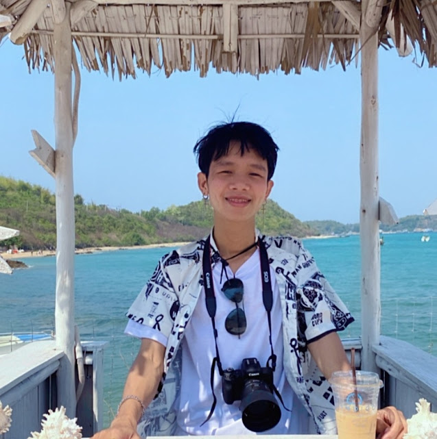

Mr.Pawit Chockchaiwan
ประวัติส่วนตัว
ชื่อ : ปวิช โชคชัยวัญญ์
อายุ : 24 ปี
เกิดวันที่ : 3 เมษายน 2544
กรุ๊ปเลือด : โอ
เชื้อชาติ : ไทย
ศาสนา : พุทธ
ประวัติการศึกษา
ระดับประถมการศึกษาปีที่1-6 : โรงเรียนคลองกุ่มบึงกุ่ม
ระดับมัธยมศึกษาปีที่1-3 : โรงเรียนอ่างศิลาพิทยาคม
ระดับประกาศนียบัตรวิชาชีพ1-3 : วิทยาลัยเทคนิคมีนบุรี
ปัจจุบันศึกษาที่ : วิทยาลัยเทคนิคสระบุรี
ประสบการการทำงาน
บริษัท เจมาร์ท โมบาย จํากัด : 6 เดือน
ร้านอาหารPalm Lake Cafe : 1 ปี
บริษัท Flash Express : 3 ปี
บริษัท Lazada Express : 6 เดือน
ร้านทองเยาวราชกรุงเทพ สระบุรี : 5 เดือน
บริษัท Formula : 4 เดือน
ติดต่อ
สามารถติดต่อผมได้ที่ : วิทยาลัยเทคนิคสระบุรี
อีเมล : tea2544zero@gmail.com
โทรศัพท์ : 080-342-9396
Facebook : Tea Owcharoen
Instagram : sorapot_tea